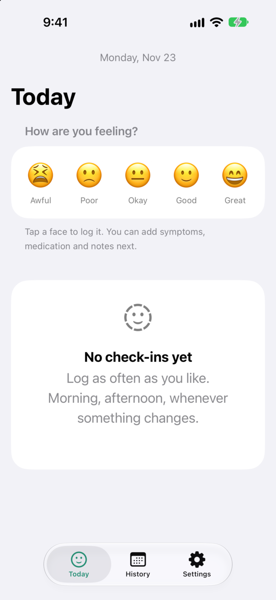

Is it a cold,
or is it pollen?
Tap a face to log how you feel. Cold or Allergy quietly records the pollen, air quality and weather around you, so over time you can see what really sets you off.

Feel it. Log it. Figure it out.
Everything you need to tell a cold from allergies, nothing you don't.
One-tap check-ins
Five faces, from awful to great. Log as often as you like, and add symptoms, medication, time outdoors or a note if you want.
Pollen, automatically
Tree, grass and weed pollen, down to the plant (oak, birch, ragweed and more), plus air quality and weather for wherever you are.
Look back
Scroll through your days and see how you felt next to what was in the air. Charts make the patterns easy to spot.
Insights on your iPhone
Ask Apple Intelligence what patterns it sees, or get a weekly summary. It all runs on your device.
Widgets everywhere
Check the pollen and log a face right from your Home Screen, Lock Screen or Control Center.
Private by design
No accounts, no ads, no tracking. Your log lives on your iPhone and in your own iCloud. Export it anytime.